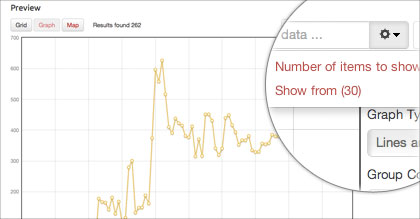
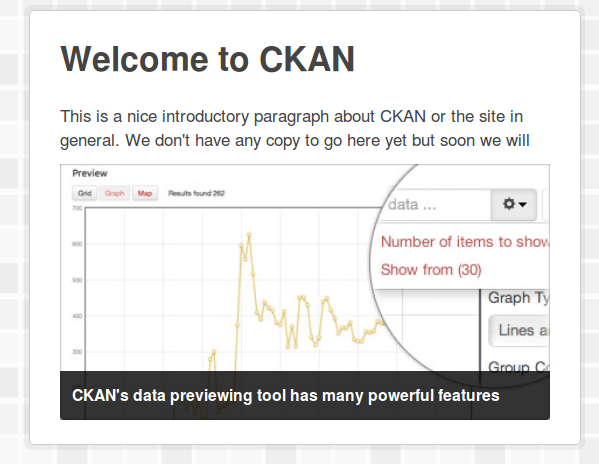

Adding static files¶
You may need to add some custom static files to your CKAN site and use them from your templates, for example image files, PDF files, or any other static files that should be returned as-is by the webserver (as opposed to Jinja template files, which CKAN renders before returning them to the user).
By adding a directory to CKAN’s extra_public_paths config setting, a plugin can make a directory of static files available to be used or linked to by templates. Let’s add a static image file, and change the home page template to use our file as the promoted image on the front page.
See also
Adding CSS and JavaScript files using Fanstatic
If you’re adding CSS files consider using Fanstatic instead of extra_public_paths, to take advantage of extra features. See Adding CSS and JavaScript files using Fanstatic. If you’re adding JavaScript modules you have to use Fanstatic, see Customizing CKAN’s JavaScript.
First, create a public directory in your extension with a promoted-image.jpg file in it:
ckanext-example_theme/
ckanext/
example_theme/
public/
promoted-image.jpg
promoted-image.jpg should be a 420x220px JPEG image file. You could use this image file for example:
{kind=link}
Then in plugin.py, register your public directory with CKAN by calling the add_public_directory() function. Add this line to the update_config() function:
def update_config(self, config):
# Add this plugin's templates dir to CKAN's extra_template_paths, so
# that CKAN will use this plugin's custom templates.
toolkit.add_template_directory(config, 'templates')
# Add this plugin's public dir to CKAN's extra_public_paths, so
# that CKAN will use this plugin's custom static files.
toolkit.add_public_directory(config, 'public')
If you now browse to 127.0.0.1:5000/promoted-image.jpg, you should see your image file.
{kind=link}
To replace the image on the front page with your custom image, we need to override the promoted.html template snippet. Create the following directory and file:
ckanext-example_theme/
ckanext/
example_theme/
templates/
home/
snippets/
promoted.html
Edit your new promoted.html snippet, and insert these contents:
{% ckan_extends %}
{% block home_image_caption %}
{{ _("CKAN's data previewing tool has many powerful features") }}
{% endblock %}
{# Replace the promoted image. #}
{% block home_image_content %}
<a class="media-image" href="#">
<img src="/promoted-image.jpg" alt="Featured image"
width="420" height="220" />
</a>
{% endblock %}
After calling {% ckan_extends %} to declare that it extends (rather than completely replaces) the default promoted.html snippet, this custom snippet overrides two of promoted.html‘s template blocks. The first block replaces the caption text of the promoted image. The second block replaces the <img> tag itself, pointing it at our custom static image file:
{% block home_image_content %}
<a class="media-image" href="#">
<img src="/promoted-image.jpg" alt="Featured image"
width="420" height="220" />
</a>
{% endblock %}
If you now restart the development web server and reload the CKAN front page in your browser, you should see the promoted image replaced with our custom one:
